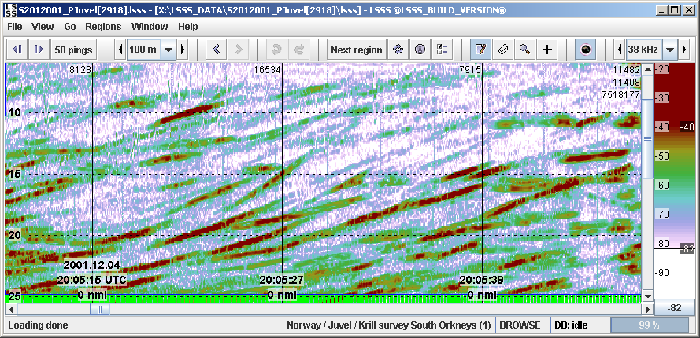
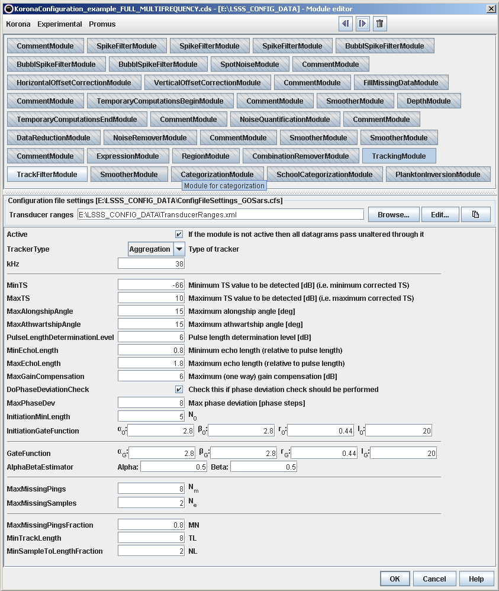
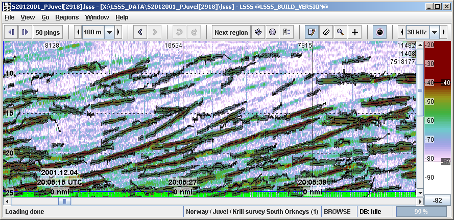

The tracks will be marked. The acoustic tracking module is based on the publication: Nils Olav Handegard, Ruben Patel and Vidar Hjellvik (2005). "Tracking individual fish from a moving platform using a split-beam transducer", J. Acoust. Soc. Am., Vol 118(4), pp 2210-2223.
The echogram below shows the 38 kHz data to be tracked.

The figure below shows the module setup, e.g. the limitations put onto the tracking algorithm.

The echogram below shows the result of the tracking (marked in grey).
